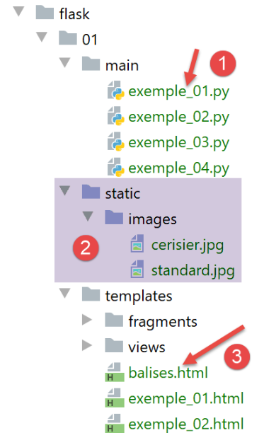
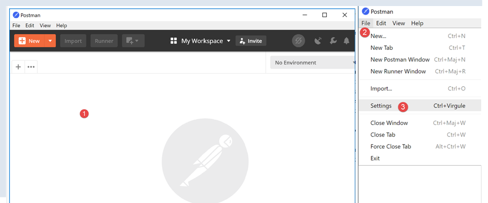
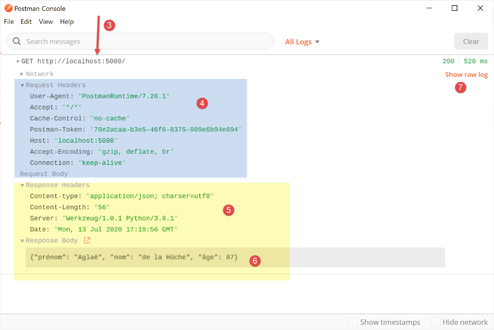
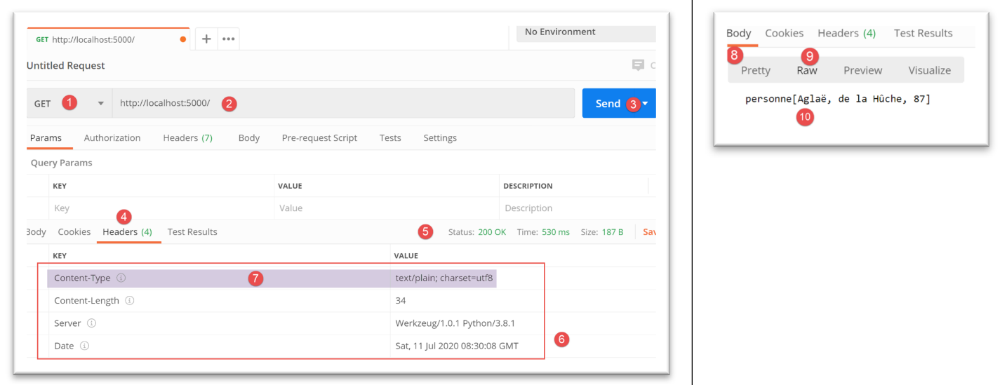
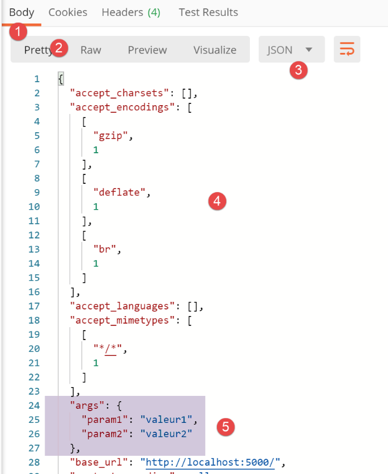
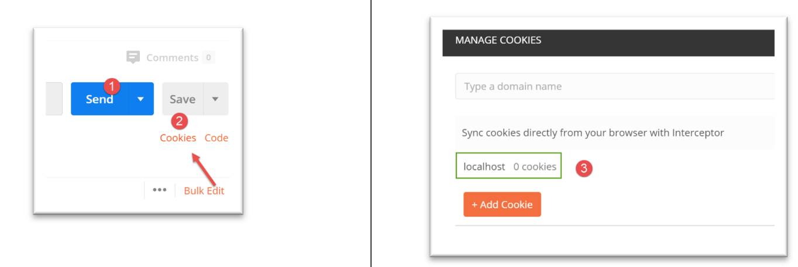
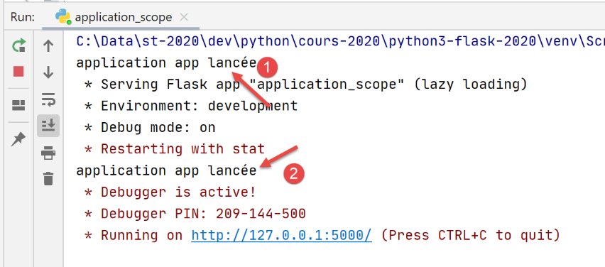
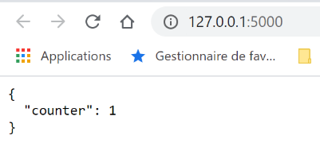

22. 基于 Flask 框架的 Web 服务
此处所指的 Web 服务，是指任何向客户端提供原始数据的 Web 应用程序，在后续示例中通常为控制台脚本。我们不关注具体的技术，例如 REST（表征状态转移）或 SOAP（简单对象访问协议），这些技术以明确定义的格式提供或多或少的原始数据。 REST 返回 JSON，而 SOAP 返回 XML。这些技术各自精确规定了客户端必须如何向服务器发起请求，以及服务器响应必须采用的格式。在本课程中，我们将对客户端请求和服务器响应的性质采取更灵活的态度。不过，所编写的脚本和使用的工具与 REST 技术类似。
22.1. 简介
Python脚本可由Web服务器执行。此类脚本将成为能够为多个客户端提供服务的服务器程序。从客户端的角度来看，调用Web服务相当于请求该服务的URL。客户端可以使用任何语言编写，包括Python。在后一种情况下，我们将使用刚才介绍过的互联网函数。 我们还需要了解如何与 Web 服务“通信”，即理解 Web 服务器与其客户端之间通信所使用的 HTTP 协议。这正是前文关于 HTTP 协议章节的宗旨。本课程中描述的 Web 客户端使我们得以探索 HTTP 协议的部分内容。

在最简单的形式下，客户端与服务端之间的交互过程如下：
- 客户端向 Web 服务器的 80 端口建立连接；
- 它请求一个文档；
- Web 服务器发送所请求的文档并关闭连接；
- 随后客户端关闭连接；
文档可以是多种类型：HTML格式的文本、图片、视频等。它可以是现成的文档（静态文档），也可以是由脚本即时生成的文档（动态文档）。在后一种情况下，我们称之为Web编程。用于动态生成文档的脚本可以使用多种语言编写：PHP、Python、Perl、Java、Ruby、C#、VB.NET等。
下文中，我们将使用 Python 脚本动态生成文本文档。

- 在[1]中，客户端与服务器建立连接，请求一个Python脚本，并可能向该脚本发送参数，也可能不发送；
- 在[3]中，Web服务器使用Python解释器执行Python脚本。该脚本生成一个文档并将其发送给客户端[2]；
- 服务器关闭连接。客户端也执行同样的操作；
Web 服务器可以同时处理多个客户端。
接下来，我们将使用两个 Web 服务器：
- 轻量级的 Werkzeug 服务器 [https://werkzeug.palletsprojects.com/en/1.0.x/]。该服务器被 Flask Web 框架 [https://flask.palletsprojects.com/en/1.1.x/] 所采用。我们通常将其称为 Flask 服务器；
- Apache 2 服务器 [https://httpd.apache.org/]；
所有示例中都将使用 Flask 服务器。我们将使用 Apache 服务器来托管即将开发的 Web 应用程序。
Flask 框架是用 Python 编写的。它是一个模块，可通过 PyCharm 终端安装：
(venv) C:\Data\st-2020\dev\python\cours-2020\python3-flask-2020\inet\utilitaires>pip install flask
Collecting flask
Downloading Flask-1.1.2-py2.py3-none-any.whl (94 kB)
|| 94 kB 1.1 MB/s
Collecting click>=5.1
Downloading click-7.1.2-py2.py3-none-any.whl (82 kB)
|| 82 kB 5.8 MB/s
Collecting itsdangerous>=0.24
Downloading itsdangerous-1.1.0-py2.py3-none-any.whl (16 kB)
Collecting Jinja2>=2.10.1
Downloading Jinja2-2.11.2-py2.py3-none-any.whl (125 kB)
|| 125 kB 6.4 MB/s
Collecting Werkzeug>=0.15
Downloading Werkzeug-1.0.1-py2.py3-none-any.whl (298 kB)
|| 298 kB 6.4 MB/s
Collecting MarkupSafe>=0.23
Downloading MarkupSafe-1.1.1-cp38-cp38-win_amd64.whl (16 kB)
Installing collected packages: click, itsdangerous, MarkupSafe, Jinja2, Werkzeug, flask
Successfully installed Jinja2-2.11.2 MarkupSafe-1.1.1 Werkzeug-1.0.1 click-7.1.2 flask-1.1.2 itsdangerous-1.1.0
- 第 1 行：执行的命令；
- 第 19 行：已安装的组件：
- [flask-1.1.2]：是一个 Python Web 开发框架；
- [Werkzeug-1.0.1]：是用于响应客户端请求的 Web 服务器；
- [Jinja2-2.11.2]：一种允许在原本静态的页面中插入动态元素的工具；
22.2. 脚本 [flask/01]：Web 编程的基础内容

我们的示例将在以下架构中运行：

- 在 [1] 中，将像执行标准控制台脚本一样运行一个 Python 脚本；
- 在 [2] 中，系统会透明地实例化一个 Web 服务器并等待请求。实际上，它只会接受一个 URL；
- 在 [3] 中，浏览器将向服务器的该唯一 URL 发送请求；
- 在 [4] 中，服务器将执行由 [1] 中的控制台指定的 Python 脚本；
- 在 [5] 中，脚本将结果（一个文本文件）返回给 Web 服务器；
- 在 [6] 中，Web 服务器将该文本文件发送给浏览器；
22.2.1. 脚本 [example_01]：HTML 基础
网页浏览器可以显示各种文档，其中最常见的是 HTML（超文本标记语言）文档。这些文档由采用 <tag>text</tag> 形式的标签进行格式化的文本组成。因此，文本 <b>important</b> 将以粗体显示“important”一词。还有一些独立标签，例如 <hr/> 标签，它会显示一条水平线。我们不会逐一介绍 HTML 文本中所有可用的标签。 市面上有许多所见即所得（WYSIWYG）软件，例如 ，它们允许您无需编写任何 HTML 代码即可构建网页。这些工具会自动为使用鼠标和预定义控件创建的布局生成 HTML 代码。因此，您可以（使用鼠标）将表格插入页面，然后查看软件生成的 HTML 代码，从而了解在网页上定义表格应使用的标签。就是这么简单。 此外，掌握 HTML 知识至关重要，因为动态 Web 应用程序必须自行生成 HTML 代码并发送给 Web 客户端。该代码是通过编程方式生成的，而您当然必须清楚该生成什么内容，才能确保客户端收到他们想要的网页。
总而言之，您无需精通整个HTML语言即可开始网页编程。不过，掌握这些知识是必要的，且可以通过使用DreamWeaver等所见即所得（WYSIWYG）网页编辑器来学习。探索HTML奥秘的另一种方法是浏览网页，查看那些包含您尚未接触过的有趣元素的页面源代码。
请看以下示例，其中列举了网页文档中常见的一些元素，例如：
- 表格；
- 图片；
- 一个链接；

HTML 文档由 <html>…</html> 标签包围。它由两部分组成：
- <head>…</head>：这是文档中不可显示的部分。它向负责显示文档的浏览器提供信息。该部分通常包含 <title>…</title> 标签，用于设置将在浏览器标题栏中显示的文本。 它还可能包含其他标签，尤其是定义文档关键词的标签，这些关键词随后会被搜索引擎使用。该部分还可能包含脚本，通常用 JavaScript 或 VBScript 编写，这些脚本将由浏览器执行；
- <body attributes>…</body>：这是浏览器将显示的部分。该部分包含的 HTML 标签向浏览器说明了文档的“预期”视觉布局。每款 浏览器都会以自己的方式解释这些标签。因此，两款浏览器可能以不同的方式显示同一个网页文档。这通常是网页设计师面临的挑战之一；
本示例文档的 HTML 代码如下：
<!DOCTYPE html>
<html xmlns="http://www.w3.org/1999/xhtml">
<head>
<meta http-equiv="Content-Type" content="text/html; charset=utf-8" />
<title>Quelques balises HTML</title>
</head>
<body style="background-image: url(/static/images/standard.jpg)">
<h1 style="text-align: left">Quelques balises HTML</h1>
<hr />
<table border="1">
<thead>
<tr>
<th>Colonne 1</th>
<th>Colonne 2</th>
<th>Colonne 3</th>
</tr>
</thead>
<tbody>
<tr>
<td>cellule(1,1)</td>
<td style="text-align: center;">cellule(1,2)</td>
<td>cellule(1,3)</td>
</tr>
<tr>
<td>cellule(2,1)</td>
<td>cellule(2,2)</td>
<td>cellule(2,3</td>
</tr>
</tbody>
</table>
<br /><br />
<table border="0">
<tr>
<td>Une image</td>
<td>
<img border="0" src="/static/images/cerisier.jpg" />
</td>
</tr>
<tr>
<td>Le site de Polytech'Angers</td>
<td><a href="http://www.polytech-angers.fr/fr/index.html">ici</a></td>
</tr>
</table>
</body>
</html>
HTML | HTML 标签及示例 |
<title>一些 HTML 标签</title> (第 5 行) 当文档显示时，文本 [一些 HTML 标签] 将出现在浏览器的标题栏中 | |
<hr />：显示一条水平线（第 10 行） | |
<table attributes>….</table>：用于定义表格（第12、32行） <thead>…</thead>：定义列标题（第 13、19 行） <tbody>…</tbody>：定义表格内容（第 20、31 行） <tr attributes>…</tr>：定义行（第 21、25 行） <td attributes>…</td>：用于定义单元格（第 22 行） 示例： <table border="1">…</table>：border 属性定义表格边框的粗细 <td style="text-align: center;">单元格(1,2)</td>（第23行）：定义一个内容为单元格(1,2)的单元格。该内容将水平居中（text-align: center）。 | |
<img border="0" src="/static/images/cherrytree.jpg"/>（第 38 行）：定义了一张无边框（border="0"）的图片，其源文件位于 Web 服务器上的 [/static/images/cherrytree.jpg]（src="/static/images/cherrytree.jpg"）。 如果此链接位于可通过 URL [http://server/chemin/balises.html] 访问的 Web 文档中，则浏览器将请求 URL [http://server/static/images/cherry-tree.jpg] 以检索此处引用的图像。 | |
<a href="http://www.polytech-angers.fr/fr/index.html">here</a>（第 43 行）：使文本“here”作为指向 URL http://www.polytech-angers.fr/fr/index.html 的链接。 | |
<body style="background-image: url(/static/images/standard.jpg)">（第8行）：表示用作页面背景的图片位于Web服务器上的URL [/static/images/standard.jpg]。在本示例中，浏览器将请求URL [http://server/static/images/standard.jpg] 以获取此背景图片。 |
从这个简单的例子中可以看出，为了生成整个文档，浏览器必须向服务器发送三次请求：
- [http://server/chemin/balises.html] 以获取文档的 HTML 源代码；
- [http://server/static/images/cerisier.jpg] 用于获取图片 cerisier.jpg；
- [http://server/static/images/standard.jpg] 用于获取背景图片 standard.jpg；
脚本 [example_01] 将使我们能够显示之前的静态页面 [tags.html]：

- 在 [1] 中，将要执行的 [example_01] 脚本；
- 在 [3] 中，脚本将显示的 HTML 文档；
- 在 [2] 中，是 HTML 文档中的图片；
脚本 [example_01] 如下：
- 第 7 行：我们实例化了一个 Flask 应用程序。Flask 应用程序是一种 Web 应用程序；
- 第一个参数是应用程序的名称。您可以选择任何喜欢的名称。这里我们使用了预定义的 [__name__] 属性，该属性被设置为 [__main__]（第 18 行）；
- 第二个参数是命名参数，这意味着它在参数列表中的位置无关紧要。 命名参数 [template_folder] 指定了 Web 应用程序静态页面所在的文件夹。静态页面将原样发送给浏览器。在此，静态页面位于项目目录树中的 [templates] 文件夹内。在第 7 行，我们指定了指向 [script_dir] 文件夹的相对路径，该文件夹中包含正在执行的 [example_01] 脚本；
- 第三个参数也是一个命名参数。[static_folder] 指定了 HTML 文档资源（图片、视频等）所在的文件夹。这里同样指定了相对路径，指向包含正在执行的 [example_01] 脚本的 [script_dir] 文件夹；
- 第 10–14 行：我们定义了 Web 应用程序接受的 URL。每个 URL 都关联了一个函数，当 Web 浏览器请求该 URL 时，该函数就会运行；
- 第 11 行：应用程序的唯一 URL 是 [/]。请注意，在 [@app.route('/')] 中，[app] 是第 7 行初始化的变量。因此，路由（应用程序处理的各种 URL）的定义必须位于应用程序 [app] 的定义之后。应用程序的名称可以任意设定；
- 第 12–14 行：当 Web 应用程序 [example_01] 接收到 [/] URL 请求时执行的函数；
- 第 12 行：与 URL 关联的函数可以取任意名称。该函数有时可能包含参数，用于从与其关联的 URL 中提取元素。此处未包含参数；
- 第 14 行：
- [render_template] 函数返回一个字符串，该字符串即由其参数生成的文本文档。此处的参数是 [balises.html]。由于第 7 行中的 [template_folder]，系统将在 [f"{script_dir}/../templates"] 文件夹中查找该文档。该文件确实位于此处；
- [make_response] 函数为请求 URL [/] 的浏览器生成一个 HTTP 响应。我们在 |HTTP 协议| 一节中看到，HTTP 响应包含两部分：
- HTTP 头部；
- 浏览器请求的文档，在本例中为 HTML 文档；
在第 14 行，我们未向 [make_response] 函数传递任何参数来生成 HTTP 头部。因此它将生成默认的 HTTP 头部。我们稍后将了解如何设置这些 HTTP 头部。
- 最后，当浏览器向 Flask 应用程序请求 URL / 时，它将收到页面 [tags.html]；
- 第 17–20 行：这些代码用于启动将运行 [example_01] Web 应用程序的 Web 服务器；
- 第 18 行：此条件仅在 [example_01] 脚本在控制台中运行时为真；
- 第 19 行：配置了第 7 行中的 [app] 应用程序：
- 名为 [ENV="development"] 的参数将 Web 服务器设置为开发模式：一旦开发者修改了应用程序的某个元素，该元素就会被重新生成并交付给 Web 服务器。开发者无需请求新的执行；
- 名为 [DEBUG=True] 的参数允许开发人员在应用程序代码中设置断点；
- 第 20 行：启动 Web 应用程序：实例化一个 Web 服务器，并将 Web 应用程序部署到该服务器上，以响应来自 Web 客户端的请求；
以下是一个运行示例：

随后，执行控制台中将显示以下日志：
C:\Data\st-2020\dev\python\cours-2020\python3-flask-2020\venv\Scripts\python.exe C:/Data/st-2020/dev/python/cours-2020/python3-flask-2020/flask/01/main/exemple_01.py
* Serving Flask app "exemple_01" (lazy loading)
* Environment: development
* Debug mode: on
* Restarting with stat
* Debugger is active!
* Debugger PIN: 334-263-283
* Running on http://127.0.0.1:5000/ (Press CTRL+C to quit)
- 第 2 行：服务器显示已执行的脚本；
- 第 3 行：当前处于开发模式；
- 第 4-5 行：服务器检测到其是在 [debug] 模式下启动的。随后它会重启（第 5 行）。因此 [debug] 模式会稍微延缓启动速度；
- 第 8 行：已部署的 Web 应用程序 [example_01] 的访问 URL；
使用网页浏览器，让我们访问 URL [http://127.0.0.1:5000/]：

我们确实获得了预期的 [tags.html] 文档。
22.2.2. 脚本 [example_02]：动态生成 HTML 文档

脚本 [example_02] [1] 将生成以下文档 [example_02.html] [2]：
<!DOCTYPE html>
<html lang="fr">
<head>
<meta charset="UTF-8">
<title>{{page.title}}</title>
</head>
<body>
<b>{{page.contents}}</b>
</body>
</html>
本文档是动态的，因为在 Web 服务器提供该文档之前，其内容尚不完全确定。具体来说，第 5 行和第 8 行包含两个在页面编写时尚未确定的元素。只有当页面发送给客户端时，这些元素才会确定。随后，它们将被替换为相应的值，这些值是字符串。
- 第 5 行、第 8 行：语法 {{expression}} 是 Jinja2 模板语言 [https://jinja.palletsprojects.com/en/2.11.x/] 的一部分。在页面发送给客户端之前，页面的动态元素（第 5 行和第 8 行）会被求值并替换为它们的值；
- 第 5 行：我们使用了 [page.title] 语法。因此，我们假设在页面生成并发送之前，变量 [page] 已被定义；稍后我们将了解其实现方式。在 {{expression}} 语法中，我们可以使用任意变量名。 因此，在第 5 行和第 8 行中，我们可以使用 {{title}} 和 {{contents}}。这样，我们可以说 [title] 和 [contents] 是页面的参数。在接下来的内容中，我们将始终采用相同的技术：
- 页面的唯一参数将是一个字典 [page]；
- 该字典的属性将在页面中被使用。此处，第 5 行中的 [page.title] 和第 8 行中的 [page.contents]；
Web 应用程序 [example_02.py] 如下所示：
- 我们在前面的示例中已经解释了第 4–5 行和第 18–20 行。在接下来的示例中，我们将继续使用这种结构；
- 第 9 行：Web 应用程序提供的唯一 URL 是 /；
- 第 14 行：在 URL / 处提供的文档就是我们刚才讨论过的 [example_02.html] 文档。我们知道它有一个参数，即名为 [page] 的字典；
- 第 12 行：我们定义了将作为参数传递给 [example_02.html] 页面的字典。该字典可以取任意名称，但必须包含 HTML 文档中使用的 [title, contents] 属性；
- 第 14 行：[render_template] 函数负责渲染 [example_02.html] 文档的字符串。由于这是一个带参数的文档，我们需要将预期的参数传递给 [render_template] 函数。在此处，我们通过为名为 [page] 的参数赋值来实现这一点。在 [page=page] 操作中：
- 等号左侧是文档 [example_02.html] 中使用的 [page] 参数；
- 等号右侧则是第 12 行定义的 [page] 值；
- 一般而言，如果一个 HTML 文档包含参数 [param1, param2, …, paramn]，我们会以 [render_template(document, param1=value1, param2=value2, …)] 的形式将这些参数的值传递给 [render_template] 函数；
在运行 [example_02] 之前，我们必须停止 [example_01] 的执行：

如果在运行脚本 1 时，看起来脚本 2 也在运行，那很可能是因为脚本 2 确实仍在运行。要恢复到已知状态，可以在 PyCharm 中停止所有当前正在运行的进程（位于 PyCharm 窗口的右上角）：

现在运行脚本 [example_02]：

此时控制台日志如下：
C:\Data\st-2020\dev\python\cours-2020\python3-flask-2020\venv\Scripts\python.exe C:/Data/st-2020/dev/python/cours-2020/python3-flask-2020/flask/01/main/exemple_02.py
* Serving Flask app "exemple_02" (lazy loading)
* Environment: development
* Debug mode: on
* Restarting with stat
* Debugger is active!
* Debugger PIN: 334-263-283
* Running on http://127.0.0.1:5000/ (Press CTRL+C to quit)
第 8 行显示了 [localhost] 机器上 [example_02] 应用程序（第 1 行）的部署端口（5000）。由于前面的行内容始终相同，我们将不再重复显示。
使用浏览器访问 URL [http://localhost:5000/]：

- 表达式 {{page.title}} 生成 [1]；
- 表达式 {{page.contents}} 生成 [2]；
22.2.3. 脚本 [example_03]：使用页面片段

- 在 [1] 中，脚本 [example_03.py] 将生成动态文档 [example_03.html] [2]。该文档将由页面片段 [fragment_01.html, fragment_02.html] [3] 构建而成；
文档 [example_03.html] 将如下所示：
<!DOCTYPE html>
<html lang="fr">
{% include "fragments/fragment_01.html" %}
<body>
{% include "fragments/fragment_02.html" %}
</body>
</html>
- 第 3 行和第 5 行使用 Jinja2 的 [include] 指令将外部元素包含到文档中；
- 其语法为 {% include … %}。[include] 指令的参数是要包含的文档的路径。该路径相对于 Flask 应用程序的 [template_folder] 参数：
app = Flask(__name__, template_folder="../templates", static_folder="../static")
因此，此处的文档路径是相对于 [templates] 文件夹的。
片段 [fragment_01.html]（名称当然是任意的）如下所示：
<meta charset="UTF-8">
<title>{{page.title}}</title>
片段 [fragment_02.html] 如下：
<b>{{page.contents}}</b>
如果我们使用这些片段重建文档 [example_03.html]，将得到以下代码：
<!DOCTYPE html>
<html lang="fr">
<meta charset="UTF-8">
<title>{{page.title}}</title>
<body>
<b>{{page.contents}}</b>
</body>
</html>
因此，我们得到了一份与 [example_02.html] 完全相同的文档，但它是通过片段构建而成的。
Web脚本[example_03.py]如下：
该代码与 [example_02.py] 中的代码类似。第 16 行展示了如何引用位于第 7 行 [template_folder] 子文件夹中的文档。
运行 [example_03.py] 脚本会在浏览器中显示以下结果：

22.3. [flask/02] 脚本：日期和时间 Web 服务

文档 [date_time_server.html] 内容如下：
<!DOCTYPE html>
<html lang="fr">
<head>
<meta charset="UTF-8">
<title>Date et heure du moment</title>
</head>
<body>
<b>Date et heure du moment : {{page.date_heure}}</b>
</body>
</html>
- 第8行：该页面接受参数 [page.date_time]；
Web 服务 [date_time_server.py] 如下所示：
- 第 13 行：该 Web 应用程序仅提供 / 路径；
- 第 15–24 行：说明如何获取日期和时间以及如何显示它们；
- 第 27 行：表示当前日期和时间的字符串；
- 第 28–30 行：通过传入第 29 行中的 [page] 字典来生成动态文档 [date_time_server.html]；
- 第 31 行：显示 [document] 的类型及其内容。我们希望展示它是一个字符串；
- 第 33 行：生成要发送给客户端的 HTTP 响应（该响应尚未发送）；
- 第 34 行：显示其类型和值；
- 第 35 行：将 HTTP 响应发送给客户端；
运行脚本后，浏览器中显示如下结果：

控制台日志如下：
C:\Data\st-2020\dev\python\cours-2020\python3-flask-2020\venv\Scripts\python.exe C:\Data\st-2020\dev\python\cours-2020\python3-flask-2020\flask\02\date_time_server.py
* Serving Flask app "date_time_server" (lazy loading)
* Environment: development
* Debug mode: on
* Restarting with stat
* Debugger is active!
* Debugger PIN: 334-263-283
* Running on http://127.0.0.1:5000/ (Press CTRL+C to quit)
127.0.0.1 - - [10/Jul/2020 09:32:09] "GET / HTTP/1.1" 200 -
document <class 'str'> <!DOCTYPE html>
<html lang="fr">
<head>
<meta charset="UTF-8">
<title>Date et heure du moment</title>
</head>
<body>
<b>Date et heure du moment : 10/07/20 09:42:33</b>
</body>
</html>
response <class 'flask.wrappers.Response'> <Response 195 bytes [200 OK]>
- 第 10 行：我们可以看到 [render_template] 返回的值的类型是 [str]。这个字符串正是经过解析（第 10–19 行）后的 [date_time_server.html] 文档；
- 第 20 行：我们可以看到 [make_response] 返回的值类型是 [flask.wrappers.Response]。系统隐式调用了 [Response.__str__] 函数来显示 [Response] 对象。该函数返回的字符串提供了关于即将发送的 HTTP 响应的两条信息：
- 发送的文档大小为 195 字节；
- HTTP响应状态为 [200 OK]。稍后我们将看到可以访问此状态码；
22.4. 脚本 [flask/03]：生成纯文本的 Web 服务
我们在之前的示例中看到，该 Web 服务返回了以下文档：
<!DOCTYPE html>
<html lang="fr">
<head>
<meta charset="UTF-8">
<title>Date et heure du moment</title>
</head>
<body>
<b>Date et heure du moment : {{page.date_heure}}</b>
</body>
</html>
Web客户端可能只对第8行中的[page.date_time]信息感兴趣，而不关心周围的HTML标记。Web服务可以将此信息作为简单的字符串返回。我们将在此展示此类Web服务的示例。
22.4.1. 脚本 [main_01]

- [main_01] 是 Web 服务；
- [config] 是 Web 应用程序配置脚本；
- 该 Web 服务使用了 [2] 中定义的部分实体；
[config] 脚本如下：
此配置的主要目的是为 Web 服务定义 Python 路径。我们需要能够定位实体 [2]（第 8 行）。
Web脚本 [main_01] 如下所示：
- 第 1-3 行：设置应用程序的 Python 路径；
- 第 5-10 行：导入脚本所需的组件；
- 第 17 行：Web 服务仅处理 / URL；
- 第 20 行：创建一个 [Person] 对象；
- 第 22 行：创建一个包含该人员字符串的 HTTP 响应。调用 [Person.__str__] 函数。该函数返回该人员 [asdict] 字典的 JSON 字符串（参见 |BaseEntity 类|）。[make_response] 函数的参数是发送给客户端的文本文档，因此这里是该人员的 JSON 字符串；
- 第 24 行：我们在响应的 HTTP 头部中添加了一个 [Content-type] 头部，告知客户端将接收何种类型的文档——在本例中，是采用 UTF-8 编码的 JSON 文档；
- 第 26 行：我们返回一个包含两个元素的元组：
- 发给客户端的响应，包括 HTTP 头部和文档；
- 响应状态码。此处我们希望返回状态码 [200 OK]。各种状态码由第 7 行导入的 [flask_api] 模块中的常量定义；
[flask_api] 模块默认不可用。您需要安装它。您可以在 PyCharm 终端中执行以下操作：
(venv) C:\Data\st-2020\dev\python\cours-2020\python3-flask-2020\inet\utilitaires>pip install flask_api
Collecting flask_api
Downloading Flask_API-2.0-py3-none-any.whl (119 kB)
|| 119 kB 544 kB/s
Requirement already satisfied: Flask>=1.1 in c:\data\st-2020\dev\python\cours-2020\python3-flask-2020\venv\lib\site-packages (from flask_api) (1.1.2)
Requirement already satisfied: Jinja2>=2.10.1 in c:\data\st-2020\dev\python\cours-2020\python3-flask-2020\venv\lib\site-packages (from Flask>=1.1->flask_api) (2.11.2)
Requirement already satisfied: Werkzeug>=0.15 in c:\data\st-2020\dev\python\cours-2020\python3-flask-2020\venv\lib\site-packages (from Flask>=1.1->flask_api) (1.0.1)
Requirement already satisfied: click>=5.1 in c:\data\st-2020\dev\python\cours-2020\python3-flask-2020\venv\lib\site-packages (from Flask>=1.1->flask_api) (7.1.2)
Requirement already satisfied: itsdangerous>=0.24 in c:\data\st-2020\dev\python\cours-2020\python3-flask-2020\venv\lib\site-packages (from Flask>=1.1->flask_api) (1.1.0)
Requirement already satisfied: MarkupSafe>=0.23 in c:\data\st-2020\dev\python\cours-2020\python3-flask-2020\venv\lib\site-packages (from Jinja2>=2.10.1->Flask>=1.1->flask_api) (1.1.1
)
Installing collected packages: flask-api
Successfully installed flask-api-2.0
运行 Web 脚本 [main_01] 时，浏览器中将显示以下结果：

- 在 [2] 中，显示接收到的 JSON 字符串；
- 在 [3-4] 中，我们显示接收到的文档内容。可以看到其中没有 HTML 标记，只有 JSON 字符串；
现在让我们看看 Web 服务发送给客户端的 [Content-Type] 标头的作用。我们将浏览器切换到开发者模式（通常按 F12），并再次请求同一 URL。以下是 Chrome 浏览器的截图：

- 在 [1] 中，选择 [网络] 选项卡；
- 在 [2, 4] 处：浏览器请求的 URL；
- 在 [3] 处，选择 [Headers] 选项卡（HTTP 头部）；
- 在 [5] 处，显示接收到的 HTTP 响应的状态码；
- 在 [6] 处，该标头告知客户端将接收 JSON 文本。这使客户端能够适应响应内容。因此，Chrome 显示 JSON 响应和普通文本响应时使用的字体并不相同；

- 在 [8] 中，选择 [Response] 选项卡以查看 Web 服务发送的文档，在本例中是一个简单的 JSON 字符串；
22.4.2. Postman
[Postman] 是一款可用于查询 Web 应用程序中各种 URL 的工具。它允许我们：
- 使用任意 URL：这些 URL 需手动构建；
- 使用 GET、POST、PUT、OPTIONS 等方法查询 Web 服务器；
- 指定 GET 或 POST 参数；
- 设置请求的 HTTP 头部；
- 接收 JSON、XML 或 HTML 格式的响应；
- 访问响应的 HTTP 头部。这使您能够获取服务器的完整 HTTP 响应；
[Postman] 是一款出色的教学工具，有助于理解通过 HTTP 协议进行的客户端/服务器通信。
[Postman] 的访问地址为 [https://www.getpostman.com/downloads/]。请继续安装您所选版本的 [Postman]。安装过程中，系统会提示您创建账户：此处无需创建。该 [Postman] 账户用于在不同设备间同步配置，以便将一台设备的设置复制到另一台设备上。此处无需进行这些操作。
安装完成后，[Postman] 将显示如下界面：

- 在 [2-3] 中，您可以访问产品设置；

- 在 [6] 中，显示本文档所使用的版本；
在此，我们将使用 [Postman] 来测试前文提到的 JSON Web 服务：
- 运行 [flask/03/main_01] 脚本；
- 然后使用 Postman 向 URL [http://localhost:5000/] 发送请求；

- 在 [1] 中，我们创建一个请求；
- 在 [2] 中，选择 HTTP GET 请求；
- 在 [3] 中，填写要查询的 Web 服务 URL；
- 在 [4] 中，我们将请求发送至 Web 服务；

- 在 [5] 中，选择 [Body] 选项卡，该选项卡会显示接收到的文档；
- 在 [6] 中，选择 [Pretty] 选项卡，该选项卡会以适当的格式显示接收到的文档，本例中格式化为 JSON 字符串；
- 在 [7] 中，显示接收到的 JSON 文档；
- 在 [8-9] 中，显示未格式化的接收文档；

- 在 [10] 中，显示 Postman 接收到的 HTTP 头部；
- 在 [11] 中，显示接收到的响应的 HTTP 状态；
- 在 [12] 中，显示接收到的 HTTP 头部；
- 在 [13] 中，显示了 [Content-type] 头部，正是该头部使 Postman 得知即将接收一个 JSON 字符串。Postman 利用此信息以特定方式格式化了接收到的文档；
还有另一种使用 Postman 的方法。它涉及使用 Postman 控制台（Ctrl-Alt-C）。这允许您查看客户端/服务器对话。除了 Ctrl-Alt-C 快捷键外，还可以通过 Postman 主窗口左下角的图标访问 Postman 控制台：

Postman 控制台会记录执行 Postman 请求时发生的客户端/服务器对话：

- 在 [3] 中，列出了 Postman 自启动以来发出的请求。最新的请求位于列表底部；
- 在 [4] 中，由 Postman 发出的 HTTP 请求；
- 在 [5-6] 中，Web 服务器发送的 HTTP 响应；
- 在 [7] 中，您可以以 [raw] 模式查看日志，即不带任何格式；
在 [raw] 模式下，控制台窗口如下所示：

- 在 [8] 中，Postman 向 Web 服务器发出的 HTTP 请求；
- 在 [9] 中，显示 Web 服务器发送的 HTTP 响应；
- 在 [10] 中，您可以切换回 [pretty logs] 模式；
为了便于理解，我们将对 Postman 控制台显示的行进行编号。
对于客户端：
对于服务器：
从现在起，我们将主要使用：
- [Postman] 作为 Web 客户端；
- [Postman] 控制台的 [原始模式] 来解释客户端/服务器的交互；
22.4.3. 脚本 [main_02]

Web脚本 [main_02] 如下：
- [main_02] 脚本与 [main_01] 脚本类似。它们有两点不同：
- 第 22 行：发送给客户端的文档是一个原始字符串，而不是 JSON 字符串；
- 第 24 行：这一点体现在 [Content-Type] HTTP 头部中，该头部将文档类型指定为 [text/plain]；
我们运行 Web 脚本 [main_02]，然后使用 [Postman] 对其进行查询：

- 在 [1-3] 中，我们向 Web 服务发起请求；
- 在 [5] 中，响应的状态为 OK；
- 在 [4, 6] 中，响应的 HTTP 头部；
- 在 [7] 中，[Content-Type] 头部；
- 在 [8-10] 中，Web 服务发送的文档，即一串字符；
Postman 控制台显示以下日志：
客户端请求：
服务器响应：
HTTP/1.0 200 OK
Content-Type: text/plain; charset=utf8
Content-Length: 34
Server: Werkzeug/1.0.1 Python/3.8.1
Date: Mon, 13 Jul 2020 17:34:22 GMT
personne[Aglaë, de la Hûche, 87]
22.4.4. 脚本 [main_03]

网页脚本 [main_03] 如下：
- 第 23 行：因实例化了错误的 Person 对象而触发错误；
- 第 27–29 行：由于上述错误：
- 第 28 行：准备一个 HTTP 响应，其内容为该错误消息；
- 第 29 行：我们将 HTTP 状态码设置为错误值 [500 内部服务器错误]；
- 第 34 行：告知客户端我们将发送纯文本；
- 第 36 行：将 HTTP 响应发送给客户端；
我们启动 Web 服务 [main_03]，并使用 Postman 对其进行查询：

- 在 [1-3] 中，我们发送请求；
- 在 [4] 中，我们收到一个状态码为 [500 INTERNAL SERVER ERROR] 的响应；
- 在 [5-7] 中：响应内容为描述所发生错误的文本；

- 在 [8-10] 中，显示 Web 服务响应的 HTTP 头部；
在 Postman 控制台中，[raw] 模式下的结果如下：
客户端请求：
服务器响应：
HTTP/1.0 500 INTERNAL SERVER ERROR
Content-Type: text/plain; charset=utf8
Content-Length: 74
Server: Werkzeug/1.0.1 Python/3.8.1
Date: Mon, 13 Jul 2020 17:39:24 GMT
MyException[11, Le prénom doit être une chaîne de caractères non vide]
22.5. 脚本 [flask/04]：请求中封装的信息

脚本 [request_parameters.py] 演示了 Web 服务可以访问 Web 客户端请求中封装的各种信息。代码如下：
- 第 9 行：我们正在进行一项更改。我们指定客户端请求中允许使用的动词。Postman 提供了以下列表：

前两个 [GET, POST] 是最常用的，也是本文中唯一会用到的。回到代码的第 9 行，[methods] 参数包含上述列表中 URL 允许的方法。如果没有这个参数，则只允许 [GET] 方法。这正是迄今为止的情况；
- 第 12 行：我们将构建 [request_data] 字典；
- 第 13 行：客户端的请求存储在第 2 行导入的预定义对象 [request] 中，其类型为 [werkzeug.local.LocalProxy]。接下来的几行代码将获取该对象的各种属性；
- 与其详细说明 [request] 对象的每个属性，不如直接运行这段代码并观察结果。这样我们就能更好地理解所显示的各种属性的含义；
- 第 42 行：字典 [request_data] 将作为 HTTP 响应的内容。请注意，该内容必须为文本。Flask 会自动将字典转换为 JSON 字符串；
- 第 44 行：我们告知客户端将接收 JSON 格式数据；
- 第 46 行：我们将响应发送给客户端；
使用 Postman 客户端，向前面的 Web 服务发送以下请求：

- 在 [1-2] 中，请求已发送；
- 在 [2] 中，请求已配置。参数以 [?param1=value1¶m2=value2] 的形式附加到 URL 中。在 Postman 中输入这些参数有两种方式：
- 直接在 URL 中输入；
- 在 [3-4] 中输入；
这两种方法效果相同；
我们在请求中添加额外参数：

- 在 [5-7] 中，我们将参数添加到请求正文中。虽然 URL 参数在网页浏览器中对用户可见，但请求正文中的参数则不可见。浏览器（或本例中的 Postman）会在 HTTP 头部之后将它们发送给服务器。 此时，Web客户端的请求结构与Web服务器的响应结构相同：HTTP头信息后跟文档主体。这将在客户端的请求中引入两个新的HTTP头：
- [Content-Type]：客户端告知服务器其发送的文档类型；
- [Content-Length]：文档的字节大小；
- 在 [6] 中，用于 [7] 中声明的参数的编码方式。这些参数可以采用多种方式进行编码。[x-www-form-urlencoded] 是浏览器常用的方法；
以下是生成的请求：

对此请求的响应如下：

- 在 [1-5] 中，我们收到了一条 JSON 字符串 [3]；
- Web 服务通常关注的是 URL 参数 [?param1=value1¶m2=value2] 以及请求正文（文档）中传递的参数。这通常是客户端向 Web 服务发送信息的方式。如 [5] 所示，URL 参数可在 [request.args] 中获取；
响应的其余部分如下：

- 在 [9] 中，请求正文中包含的参数属性：
- [content_type] 是随请求附带的文档类型。我们看到该文档包含以 [x-www-form-urlencoded] 形式编码的 [param=value] 类型信息。因此，Postman 生成了一个 HTTP [Content-Type] 头部来指示文档的性质；
- [content_length] 是该文档的字节大小；
- 在 [10] 中，[request.environ] 属性包含大量关于客户端请求处理环境的信息。其中大部分信息可在 [request] 对象的其他属性中找到；
- 在 [11] 中，请求正文中的参数可通过 [request.form] 属性获取；
- 在 [12] 中，表示发送请求所使用的方法，此处为 [GET] 方法；
- 在 [13] 中，[request.values] 属性是一个包含所有参数的字典，包括来自 URL 的参数和来自文档正文的参数。要检索请求参数，请使用属性：
- [request.args] 用于获取 URL 中的参数；
- [request.form] 用于获取文档正文中的参数；
在 Postman 控制台中，日志如下：
客户端请求：
- 第 9 行：第 12 行发送给服务器的文档类型；
- 第 11 行：请求的 HTTP 头部与发送的文档之间用空行分隔。服务器正是通过这种方式识别客户端 HTTP 头部的结束；
- 第 12 行：经过“URL 编码”的文档。所有带重音的字符均已进行编码；
客户端的响应如下：
HTTP/1.0 200 OK
Content-Type: application/json; charset=utf-8
Content-Length: 2433
Server: Werkzeug/1.0.1 Python/3.8.1
Date: Wed, 15 Jul 2020 06:09:09 GMT
{
"accept_charsets": [],
"accept_encodings": [
[
"gzip",
1
],
[
"deflate",
1
],
[
"br",
1
]
],
"accept_languages": [],
"accept_mimetypes": [
[
"*/*",
1
]
],
"args": {
"param1": "valeur1",
"param2": "valeur2"
},
"base_url": "http://localhost:5000/",
"content_encoding": null,
"content_length": 60,
"content_type": "application/x-www-form-urlencoded",
"endpoint": "index",
"environ": "{'wsgi.version': (1, 0), 'wsgi.url_scheme': 'http', 'wsgi.input': <_io.BufferedReader name=908>, 'wsgi.errors': <_io.TextIOWrapper name='<stderr>' mode='w' encoding='utf-8'>, 'wsgi.multithread': True, 'wsgi.multiprocess': False, 'wsgi.run_once': False, 'werkzeug.server.shutdown': <function WSGIRequestHandler.make_environ.<locals>.shutdown_server at 0x00000173CA6E5160>, 'SERVER_SOFTWARE': 'Werkzeug/1.0.1', 'REQUEST_METHOD': 'GET', 'SCRIPT_NAME': '', 'PATH_INFO': '/', 'QUERY_STRING': 'param1=valeur1¶m2=valeur2', 'REQUEST_URI': '/?param1=valeur1¶m2=valeur2', 'RAW_URI': '/?param1=valeur1¶m2=valeur2', 'REMOTE_ADDR': '127.0.0.1', 'REMOTE_PORT': 50592, 'SERVER_NAME': '127.0.0.1', 'SERVER_PORT': '5000', 'SERVER_PROTOCOL': 'HTTP/1.1', 'HTTP_USER_AGENT': 'PostmanRuntime/7.26.1', 'HTTP_ACCEPT': '*/*', 'HTTP_CACHE_CONTROL': 'no-cache', 'HTTP_POSTMAN_TOKEN': 'cbfac6aa-71a0-4076-a0c3-91d36d74a4c0', 'HTTP_HOST': 'localhost:5000', 'HTTP_ACCEPT_ENCODING': 'gzip, deflate, br', 'HTTP_CONNECTION': 'keep-alive', 'CONTENT_TYPE': 'application/x-www-form-urlencoded', 'CONTENT_LENGTH': '60', 'werkzeug.request': <Request 'http://localhost:5000/?param1=valeur1¶m2=valeur2' [GET]>}",
"files": {},
"form": {
"nom": "s\u00e9l\u00e9n\u00e9",
"pr\u00e9nom": "agla\u00eb",
"\u00e2ge": "77"
},
"full_path": "/?param1=valeur1¶m2=valeur2",
"host": "localhost:5000",
"method": "GET",
"path": "/",
"query_string": "param1=valeur1¶m2=valeur2",
"referrer": null,
"remote_addr": "127.0.0.1",
"remote_user": null,
"scheme": "http",
"script_root": "",
"url": "http://localhost:5000/?param1=valeur1¶m2=valeur2",
"url_root": "http://localhost:5000/",
"user_agent": "PostmanRuntime/7.26.1",
"values": {
"nom": "s\u00e9l\u00e9n\u00e9",
"param1": "valeur1",
"param2": "valeur2",
"pr\u00e9nom": "agla\u00eb",
"\u00e2ge": "77"
}
}
- 第 1-5 行：响应的 HTTP 头部以空行结尾；
- 第41-45行：带重音的字符已采用UTF-8编码；
如果现在使用 [POST] 方法发送包含相同参数的请求，我们将获得相同的响应，只是在 [12] 中，[‘method’] 字段的值为 [‘POST’]。
那么 GET 和 POST 方法之间有什么区别呢？区别很微妙，源于浏览器历史上对它们的使用方式：
- URL 中的参数非常方便，因为这样配置的 URL 可以作为 HTML 文档内的链接。用户还可以自行更改参数以从服务器获取不同的响应。在这种情况下，浏览器通常使用 [GET] 方法，且发送给 Web 服务器的请求中没有请求体（content_length=0，即没有隐藏参数）；
- 有时我们不希望参数显示在 URL 中。向服务器发送密码时便是如此。此外，URL 参数所占用的空间是有限的（URL 长度不能超过一定限制）。而请求正文参数则没有这一限制。另外，URL 中参数过多会导致其难以阅读。 让我们以网站注册表单这一常见场景为例。在早期HTML页面尚未包含JavaScript时，浏览器会通过POST请求发送用户输入的信息。这被称为“提交值”；
因此，在 Web 编程的早期：
- GET方法通常用于向Web服务器请求信息；
- POST方法通常用于将信息从浏览器发送至服务器。随后，服务器会通过这些数据得到“丰富”；
此后，JavaScript应运而生。在之前的示例中，开发者无法掌控（点击链接必然触发GET，提交表单必然涉及POST），而JavaScript将这种控制权交还给了开发者。在此模型中，HTML页面与JavaScript代码相连，该代码可绕过浏览器。因此，点击链接的行为可被JavaScript代码拦截，进而执行向服务器发送请求的代码。 该请求对用户而言是透明的，用户无法察觉。这段代码充当了 Web 客户端，正如我们使用 Postman 时那样，开发者可以创建任何他们想要的请求。以点击链接为例，当浏览器默认会执行 GET 请求时，开发者可以执行 POST 请求。这些发展使得 GET 和 POST 之间的区别不再那么重要。
不过，开发者通常仍遵循以下规则：
- GET请求不得修改服务器的状态。使用相同URL参数发出的连续GET请求必须返回相同的文档。此外，GET请求通常没有请求体（不包含关联文档），仅包含URL中的参数；
- POST 请求可以修改服务器的状态。参数通常通过请求主体发送，这些被称为提交值。表单示例最能说明这一点：用户输入的值被放入 POST 主体中，服务器会将它们存储在某个地方，通常是数据库中；
在本文档的其余部分，我们不遵循任何特定规则。
22.6. 脚本 [flask-05]：管理用户内存
22.6.1. 简介
在之前的客户端/服务器示例中，该过程的工作原理如下：
- 客户端向 Web 服务器机器的 80 端口建立连接；
- 客户端发送文本序列：HTTP 头部、空行、[文档]；
- 作为响应，服务器发送同类型的序列；
- 服务器关闭与客户端的连接；
- 客户端关闭与服务器的连接；
如果同一客户端随后不久向 Web 服务器发出新请求，客户端与服务器之间将建立新的连接。服务器无法判断连接的客户端是否曾访问过，还是这是首次请求。在两次连接之间，服务器会“忘记”其客户端。因此，HTTP 协议被称为无状态协议。然而，服务器记住其客户端是有用的。 例如，如果应用程序是安全的，客户端会向服务器发送用户名和密码以进行身份验证。如果服务器在连接之间“忘记”了该客户端，那么客户端就必须在每次建立新连接时都重新进行身份验证，这显然是不切实际的。
为了追踪客户端，服务器可以采取多种方式：
- 当客户端发出初始请求时，服务器会在响应中包含一个标识符，客户端随后必须在每次新请求中将该标识符发回。通过这个对每个客户端都唯一的标识符，服务器可以识别该客户端。然后，服务器可以为该客户端管理一个缓存，该缓存以与客户端标识符唯一关联的形式存在。例如，PHP 服务就是这样工作的；
- 当客户端发出初始请求时，服务器在响应中不包含标识符，而是直接包含用户的内存本身。服务器端不存储任何数据。为了保持内存状态，Web 客户端必须在每次新请求中重新发送这块内存。这块内存会随着每次新请求被修改（或保持不变），并被发回（或不发回）给客户端。这是 Flask 框架采用的方法；
这两种方法的区别如下：
- 方法 1 消耗更少的带宽。客户端与服务器之间仅交换一个标识符。随着用户内存的增长，这不会影响标识符，标识符保持不变。方法 2 则不然，该方法在每次请求时都会交换用户内存，且内存可能在多次请求过程中不断增长；
- 方法 1 消耗更多的内存空间。这是因为服务器将用户的内存存储在其文件系统中。如果用户数量达到一百万，这可能会造成问题。方法 2 则不在服务器上存储任何内容；
从技术角度来看，两种方法的工作原理如下：
- 在响应新客户端时，服务器会在响应中包含 HTTP 头部 [Set-Cookie: Key=ID] 或 [Set-Cookie: memory]。在方法 1 中，仅在首次请求时执行此操作；而在方法 2 中，每当用户内存发生变化时都会执行此操作；
- 客户端在请求中会系统性地返回其接收到的内容——标识符或内存数据。它通过 HTTP 头部 [Cookie: Key=Value] 实现这一点；
有人可能会疑惑，服务器如何分辨当前是新客户端还是回访客户端。关键在于客户端的 HTTP 头部中是否存在 HTTP Cookie 头部。对于新客户端，该头部不存在。
来自特定客户端的一组连接被称为会话。
服务器还可以维护其他类型的内存：

- 在[1]中，请求级内存具有特殊性。当 Web 客户端的请求不是由单个服务（或应用程序）处理，而是由多个服务处理时，就会用到它。为了将信息传递给第 i+1 个服务，第 i 个服务可以在处理后的请求中添加这些信息。这被称为请求级内存。本文档中我们将不使用这种类型的内存；
- 在[2, 4]中，即我们刚刚描述的用户内存。它可以本地实现[2]，或通过客户端维护[4]；
- 在[3]中，“应用程序级”内存通常为只读。它由所有用户共享。其中常包含Web应用程序的配置项，这些配置由应用程序的所有用户共享。我们必须谨慎处理此类内存：向其写入操作必须在用户尚未发送请求时进行，通常是在应用程序启动时。一旦请求开始到达，就很难向该内存写入数据。 当 Web 服务器同时为多个用户提供服务，且其中两位用户试图向“应用程序”级内存写入数据时，该内存存在损坏的风险。这是因为，当用户 1 开始向“应用程序”级内存写入数据时，可能在完成前就被中断。这将导致应用程序内存不完整。由于该内存是共享的，用户 2 读取时可能会获取到错误的状态；
22.6.2. 脚本 [session_scope_01]

[session_scope_xx] 脚本演示了用户内存管理。
脚本 [session_scope_01] 内容如下：
- 第 11 行：实例化了一个 Flask 应用程序；
- 第 14 行：将第 1–3 行中使用的配置文件中的值赋给该应用程序的 [secret_key] 属性。只有初始化了该属性，Flask 才能建立会话。该属性可以设置为任意值，用于加密将发送给客户端的“用户数据”的一部分。 我们通常会设置一个难以猜出的值。在 [config] 文件中，密钥定义如下：
# on rend la config
config = {
# configuration Flask
"SECRET_KEY": "vibnFfrdWYUp?*LQ"
}
- 这是我们首次定义一个提供除 URL / 以外内容的 Web 应用程序
- 第 17 行：URL [/set-session] 用于初始化用户的会话；
- 第 27 行：URL [/get-session] 用于检索用户的会话；
- 第 20 行：我们将某些内容放入用户的会话中，此处是一个名称。会话的管理方式类似于字典。您不能随意将任何内容放入会话中。放入的值必须能够转换为 JSON ( )。对于 Python 的预定义类型，此过程会自动进行，无需开发者干预 。对于 Python 不识别的自定义对象，您必须自行执行 JSON 转换；
- 第 22 行：我们创建一个无内容的 HTTP 响应（未向 `make_response` 传递任何参数）；
- 第 23 行：告知客户端将收到一个空文档（大小为 0 字节）；
- 第 24 行：我们将 HTTP 响应发送给客户端。因此，URL [/set-session] 除了初始化用户会话外，不执行其他操作；
- 第 27 行：URL [/get-session] 允许用户查看其会话中的内容；
- 第 30 行：我们创建一个包含用户会话 JSON 字符串的 HTTP 响应。这里我们自己创建了 JSON 字符串，而不是让 Flask 自动生成。这是因为我们不希望带重音的字符被转义（ensure_ascii=False）；
- 第 31 行：我们告知客户端将发送 JSON 数据；
- 第 32 行：我们将 HTTP 响应发送给客户端；
本脚本的目的是演示用户会话如何让我们将用户的连续请求关联起来：
- 请求 1 将向 URL [/set-session] 发送请求；
- 请求 2 将访问 URL [/get-session] 并获取请求 1 初始化的名称；
用于配置 [flask/05] 文件夹中脚本的 [config] 脚本如下：
我们运行 [session_scope_01] 脚本，然后使用 Postman 请求 URL [/set-session]。在此之前，我们将检查即将发出的请求中的几个要素：

- 在 [1] 中，访问 Postman 的 Cookie；

- 在 [2-4]，我们检查 Postman 的已知 Cookie 并将其全部删除 [4-5]；
现在，让我们检查即将生成的 HTTP 请求：

- 在 [9] 中：Postman 会根据我们为其设置的配置，在请求中包含部分 HTTP 头部。此检查可帮助您确认是否遗漏了任何参数，或者反之，是否留有不必要的参数；
完成上述步骤后，我们可以执行该请求：

查看结果有多种方式。您可以先查看主窗口：

- 在 [1-2] 中，是发送给 Web 服务的请求；
- 在 [3-6] 中，响应的 HTTP 头部；
- 在 [4] 中，由于我们在代码中未指定响应类型，Flask 使用了默认类型 [text/html]；
- 在 [5] 中，客户端知道响应中没有文档；
- 第 6 行：[Set-Cookie] 头部由 Flask 服务器发送。其值称为会话 Cookie，由三个部分组成：
- [session=value]：value 代表用户会话数据的编码形式。该数据可被解码（参见 |https://blog.miguelgrinberg.com/post/how-secure-is-the-flask-user-session|）。 然而，由于服务器使用了密钥，用户无法修改接收到的数据并将其发回服务器。因此，当服务器收到会话时，可确保接收到的会话数据未被篡改；
- [HttpOnly]：该属性的存在告知接收它的浏览器，该 Cookie 不得被其所显示页面中可能包含的任何 JavaScript 访问；
- [Path=/] 表示必须回传会话 Cookie 的路径，此处指 Web 应用程序内的任意路径。无论用户是显式（通过输入 URL）还是隐式（通过点击链接）请求该域名的 URL，浏览器都会自动回传其收到的会话 Cookie；
主窗口的缺点在于，您无法查看导致此响应的完整请求。该窗口中显示的内容令人困惑：

- 在 HTTP 头部 [3-4] 中，[5] 处显示了一个会话 Cookie。 有人可能会认为 Postman 在请求中包含了会话 Cookie，但事实并非如此。标头 [3] 实际上代表了根据当前配置将在下一次请求中发送的 HTTP 标头。Postman 刚刚接收到了一个会话 Cookie，它将在下一次请求中将其发回。这就是为什么会有 [5]；
您可以通过按下 Ctrl-Alt-C 键在 Postman 控制台中访问客户端/服务器对话框：
GET /set-session HTTP/1.1
User-Agent: PostmanRuntime/7.26.1
Accept: */*
Cache-Control: no-cache
Postman-Token: 3673b73f-7600-4df4-8c4b-c37973e50df8
Host: localhost:5000
Accept-Encoding: gzip, deflate, br
Connection: keep-alive
HTTP/1.0 200 OK
Content-Type: text/html; charset=utf-8
Content-Length: 0
Vary: Cookie
Set-Cookie: session=eyJub20iOiJzXHUwMGU5bFx1MDBlOW5cdTAwZTkifQ.Xw6jGQ.y5Icu70wTIN-B0o_hwx0xDH247I; HttpOnly; Path=/
Server: Werkzeug/1.0.1 Python/3.8.1
Date: Wed, 15 Jul 2020 06:32:57 GMT
- 第 14 行：服务器发送的会话 Cookie；
现在让我们请求 URL [/get-session]：
- 第 9 行：Postman 客户端将收到的会话 Cookie 发回给服务器；
- 第 18 行：服务器发送的 JSON 字符串；
此示例说明了以下几点：
- Postman 客户端将从 Flask 服务器接收到的会话 Cookie 发回；Web 浏览器总是这样做的；
- 我们可以看到，请求 2 [/get-session] 检索到了在请求 1 [/set-session] 期间创建的信息。这实际上起到了用户状态的作用；
- 第 11–16 行：Flask 服务器未返回会话 Cookie。但情况并非总是如此。只有当上一次请求修改了用户的会话时，Flask 服务器才会返回会话 Cookie；
22.6.3. 脚本 [session_scope_02]

[session_02] 脚本如下：
- 第 11 行：此处使用一个函数生成密钥。该函数的优势在于它能随机生成一个复杂的字符串。请注意，变量 [app] 是第 8 行创建的 Flask 类实例；
- 第 15 行：这次只有一条路由，即 / 路由；
- 第 17–29 行：我们管理一个包含三个计数器 [n1, n2, n3] 的会话。在用户的首次调用时，[n1, n2, n3] = [0, 10, 100]，在随后的每次调用中，这些计数器都会增加 1；
- 第 18 行：在首次请求时，应用程序会话为空。表达式 [session.get('key')] 返回值 [None]。对于后续请求，该表达式将返回与该键关联的值；
- 第 31 行：这些计数器被放入一个字典中；
- 第 33 行：该字典即为 HTTP 响应正文。请注意，Flask 会自动将字典转换为 JSON 字符串；
- 第 34 行：告知 Web 客户端将接收 JSON 数据；
- 第 35 行：我们将 HTTP 响应发送给客户端；
现在运行此脚本，并在从 Postman 客户端删除所有 Cookie 后，使用 Postman 查询以此方式创建的 Web 应用程序 [1-3]：

在 Postman 控制台中，客户端与服务器的交互如下：
GET / HTTP/1.1
User-Agent: PostmanRuntime/7.26.1
Accept: */*
Cache-Control: no-cache
Postman-Token: c7db536d-9352-4aa6-9877-04560e03d935
Host: localhost:5000
Accept-Encoding: gzip, deflate, br
Connection: keep-alive
HTTP/1.0 200 OK
Content-Type: application/json; charset=utf-8
Content-Length: 41
Vary: Cookie
Set-Cookie: session=eyJuMSI6MCwibjIiOjEwLCJuMyI6MTAwfQ.Xw6nLg.v49CeDWwqP-6Dp9Qt330GAe-dNA; HttpOnly; Path=/
Server: Werkzeug/1.0.1 Python/3.8.1
Date: Wed, 15 Jul 2020 06:50:22 GMT
{
"n1": 0,
"n2": 10,
"n3": 100
}
- 在 [14] 中，服务器发送的会话 Cookie；
- 在 [18-22] 中，服务器以 JSON 字符串形式返回的响应；
让我们再次发出相同的请求。日志将发生如下变化：
GET / HTTP/1.1
User-Agent: PostmanRuntime/7.26.1
Accept: */*
Cache-Control: no-cache
Postman-Token: 8205ad85-37b3-41f2-a171-70dd3b3a1679
Host: localhost:5000
Accept-Encoding: gzip, deflate, br
Connection: keep-alive
Cookie: session=eyJuMSI6MCwibjIiOjEwLCJuMyI6MTAwfQ.Xw6nLg.v49CeDWwqP-6Dp9Qt330GAe-dNA
HTTP/1.0 200 OK
Content-Type: application/json; charset=utf-8
Content-Length: 41
Vary: Cookie
Set-Cookie: session=eyJuMSI6MSwibjIiOjExLCJuMyI6MTAxfQ.Xw6nsw.OuxIQnGhmhSsan5Qu_FL3Iyu-9k; HttpOnly; Path=/
Server: Werkzeug/1.0.1 Python/3.8.1
Date: Wed, 15 Jul 2020 06:52:35 GMT
{
"n1": 1,
"n2": 11,
"n3": 101
}
- 第 9 行：Postman 客户端将收到的会话 Cookie 发回；
- 第 15 行：服务器在其响应中发送一个新的会话 Cookie，因为客户端的请求修改了用户的状态（即会话）；
- 第19–23行：新的计数器值；
22.6.4. 脚本 [session_scope_03]
本脚本旨在演示不同类型的 Python 数据（列表、字典和对象）均可放入会话中。唯一的要求是：放入会话的对象必须能够序列化为 JSON。如果它们默认不可序列化（如列表、字典），则必须自行将其转换为 JSON。
- 第 1-3 行：配置 Web 应用程序；
- 第 5-11 行：导入依赖项；
- 第 14 行：实例化 Flask 应用程序；
- 第 17 行：初始化 [secret_key] 属性。这启用了会话功能；
- 第 21 行：应用程序的唯一路由；
- 第 23–33 行：在会话中管理一个列表。我们向其中放入了默认可序列化为 JSON 的元素；
- 第 35–46 行：在会话中管理一个字典。我们向其中放入了默认可在 JSON 中序列化的元素；
- 第 48–58 行：管理一个 person。默认情况下，[Person] 对象无法在 JSON 中序列化。因此，必须采取预防措施；
- 第 58 行：我们使用 [BaseEntity.asjson] 方法将该人的 JSON 字符串存储在会话中。请注意，我们本可以使用 [person.asdict]，因为 [person.asdict] 是一个字典，其中包含默认可序列化为 JSON 的值；
- 第 55 行：由于我们在会话中存储了 JSON 字符串，因此使用 [BaseEntity.fromjson] 方法从中检索该人员；
- 第 61 行：我们创建 [results] 字典，该字典将作为响应发送给客户端。我们知道，在此情况下，Flask 会发送该字典的 JSON 字符串。因此，它必须仅包含默认可序列化为 JSON 的值；
- 第 64 行：我们显式地将 [results] 字典的 JSON 字符串设置在 HTTP 响应中。Flask 默认也会这样做。但是，默认情况下它会使用 [ensure_ascii=True] 参数，这不符合我们的需求；
- 第 65 行：我们告知客户端将接收 JSON 数据；
- 第 66 行：我们将响应发送给客户端；
我们启动 Web 应用程序。从 Postman 客户端中删除所有 Cookie。随后客户端请求 URL [http://localhost:5000]。Postman 控制台中的客户端/服务器对话如下：
GET / HTTP/1.1
User-Agent: PostmanRuntime/7.26.1
Accept: */*
Cache-Control: no-cache
Postman-Token: 5f8b7c63-aa8a-4429-a2fa-62141423d933
Host: localhost:5000
Accept-Encoding: gzip, deflate, br
Connection: keep-alive
HTTP/1.0 200 OK
Content-Type: application/json; charset=utf-8
Content-Length: 135
Vary: Cookie
Set-Cookie: session=.eJw9isEKwyAQRH-lzHkPm15K91dqD2mzBMFq0AgF8d-jsRQG9u3MK1jsO0AKFs1fyMSEPQabOjbOHsKV4GzaFfJgmnr4Sdg0puB9a1EMtmgys959-BjIxWBe3XxWLwNq_39IQ3Q_f5zhnHxdtYs3rqgH4gQvMg.Xw6yGw.Bwpt3q-sH03gFLmg2FIPXV_ZNt8; HttpOnly; Path=/
Server: Werkzeug/1.0.1 Python/3.8.1
Date: Wed, 15 Jul 2020 07:36:59 GMT
{"liste": [0, 10, 100], "dict": {"un": 0, "deux": 10, "trois": 100}, "personne": {"prénom": "aglaë", "nom": "séléné", "âge": 70}}
我们再次发出请求：
GET / HTTP/1.1
User-Agent: PostmanRuntime/7.26.1
Accept: */*
Cache-Control: no-cache
Postman-Token: 40fd00ea-d45c-46b7-a51e-d4d433a37b5c
Host: localhost:5000
Accept-Encoding: gzip, deflate, br
Connection: keep-alive
Cookie: session=.eJw9isEKwyAQRH-lzHkPm15K91dqD2mzBMFq0AgF8d-jsRQG9u3MK1jsO0AKFs1fyMSEPQabOjbOHsKV4GzaFfJgmnr4Sdg0puB9a1EMtmgys959-BjIxWBe3XxWLwNq_39IQ3Q_f5zhnHxdtYs3rqgH4gQvMg.Xw6yGw.Bwpt3q-sH03gFLmg2FIPXV_ZNt8
HTTP/1.0 200 OK
Content-Type: application/json; charset=utf-8
Content-Length: 135
Vary: Cookie
Set-Cookie: session=.eJw9isEKwyAQRH-lzHkP2kupv9LtIW2WIBgNGqEg_nu3seQ0b2Zew-zfCa5hlvqBs5aw5-SLolGuUaETgi-7wD0sqaHPk7BJLilGXdEYW-ZqjNxjWhnuwpiWMB3Ti0Haz6MMMfz9EcM5-LrIT7zZjv4F5NYvOQ.Xw6ydQ.PMWRCqKx9HNnb_DyK-ha-9pCF7M; HttpOnly; Path=/
Server: Werkzeug/1.0.1 Python/3.8.1
Date: Wed, 15 Jul 2020 07:38:29 GMT
{"liste": [1, 11, 101], "dict": {"deux": 11, "trois": 101, "un": 1}, "personne": {"prénom": "aglaë", "nom": "séléné", "âge": 71}}
- 第 9 行：客户端将收到的会话 Cookie 发回；
- 第 15 行：由于会话内容已发生变化（第 19 行），服务器发送了一个新的 Cookie 作为响应。请注意，该内容是以加密形式存储在会话 Cookie 中的；
22.7. 脚本 [flask/06]：所有用户共享的信息
22.7.1. 简介
本节旨在展示如何管理全局信息，即所有用户共享的信息。这类信息通常由应用程序配置数据组成。我们已经看到，Web 应用程序可以维护不同类型的内存：
这里我们关注的是应用程序的内存 [3]。
22.7.2. 脚本 [application_scope_01]
脚本 [application_scope_01] 演示了管理“应用程序”范围数据的一种方法：
- 第 1–3 行：我们获取配置字典。我们将证明位于路由函数外部的代码仅执行一次。Flask 应用程序始终驻留在内存中。所有在路由外部初始化的信息对路由而言都是全局的，因此路由可以访问这些信息。因此，第 3 行中的 [config] 字典将被 / 路由（第 24 行）返回。 我们将证明所有 Web 客户端都会收到相同的字典，因此该字典由所有客户端共享。这属于“应用程序”作用域的信息；
- 第 35 行：我们添加日志以检查路由函数外部的代码（第 1–10 行、第 32–38 行）是否被多次执行；
配置 [config] 如下：
我们启动该应用程序。PyCharm 控制台中的日志如下：

- 在 [1] 中，应用程序的初始启动；
- 在 [2] 中，由于我们请求了 [Debug] 模式，应用程序以 [Debug] 模式重新启动；
现在，使用浏览器（下文为 Chrome），我们输入 URL [http://127.0.0.1:5000/]：

现在使用 Firefox 浏览器：

现在使用 Postman 客户端：
现在，让我们回到 Pycharm 的 [运行] 控制台：

- 这两个日志条目 [1, 2] 仍然存在，但除此之外没有其他条目，尽管我们可以看到 Web 服务器接收到的三个请求；
为了彻底确保应用程序不会在每次新请求时都被重新加载，我们可以在配置中添加一个计数器，并在每次新请求时将其递增。这样我们就会发现，每个客户端看到的计数器值都是前一个客户端留下的状态。 然而，必须注意的是，客户端不应修改应用程序范围内的数据，因为这些数据在所有客户端之间共享。在服务器同时为多个客户端提供服务且无法保证单个客户端的请求能完全无中断执行的情况下，如果客户端 1 发送的请求 1 在完成前被中断，可能会导致共享数据处于损坏状态，从而影响后续客户端。
22.7.3. 脚本 [application_scope_02]

[application_scope_02] 脚本将做一件绝对不该做的事：允许客户端修改与其他用户共享的信息。我们将创建一个在用户间共享的计数器，供用户进行递增操作。我们将看到，每个用户都能查看其他用户对计数器所做的更改。
脚本内容如下：
- 第 10–12 行：用户共享的 [config] 字典。它包含一个计数器；
- 第 22 行：每次用户请求 / URL 时，配置计数器都会递增；
- 第 23–26 行：将字典的 JSON 字符串发送给每个客户端；
我们运行此脚本。然后，我们使用第一台浏览器请求 URL [http://127.0.0.1:5000/]：

接着，我们使用第二个浏览器重复上述操作：

接着使用 Postman 进行第三次请求：

我们可以看到，每个客户端获取到的计数器状态都与前一个客户端留下的状态一致。因此，它们能够访问相同的信息。
22.7.4. 脚本 [application_scope_03]
[application_scope_03] 脚本演示了为何用户之间共享的信息必须为只读。

脚本内容如下：
- 第 43 行：我们更改了 Web 应用程序的执行模式。我们添加了 [threaded=True] 来指示应用程序应同时为多个用户提供服务。这是通过执行线程实现的：
- 可以存在多个并发执行线程，每个线程服务一个用户；
- 这些线程共享机器的处理器；
- 一个线程可能在完成工作之前被中断，稍后会继续执行；
- 第 19 行：[index] 函数可由多个线程同时执行；
- 第 24 行：我们获取正在执行 [index] 函数的线程名称；
- 第 26 行：读取计数器值。为了演示目的，我们将计数器的递增过程分解如下：
- 步骤 1：线程 1 读取计数器（例如 1）；
- 步骤 2：线程 1 暂停 5 秒（第 29 行）。由于线程 1 请求了暂停，处理器被移交给另一个线程——线程 2。目标是让这个新线程读取相同的计数器值（=1）。随后，它也暂停 5 秒并失去处理器控制权；
- 步骤 3：根据步骤 1 读取的值（=1）对计数器进行递增（第 31 行）。线程 1 最先执行此操作：它将计数器设为 2，然后完成 [index] 函数的执行。随后轮到线程 2 唤醒，并同样根据步骤 1 读取的值（=1）将计数器设为 2。 最终，当两个线程都运行完毕后，计数器显示为2，而它本应为3；
- 第 33 行：我们显示计数器值以供验证；
我们运行脚本，随后使用两个浏览器以及 Postman 请求 URL [http://loaclhost:5000/]。PyCharm 控制台中的日志如下：
C:\Data\st-2020\dev\python\cours-2020\python3-flask-2020\venv\Scripts\python.exe C:/Data/st-2020/dev/python/cours-2020/python3-flask-2020/flask/06/application_scope_03.py
* Serving Flask app "application_scope_03" (lazy loading)
* Environment: development
* Debug mode: on
* Restarting with stat
* Debugger is active!
* Debugger PIN: 334-263-283
* Running on http://127.0.0.1:5000/ (Press CTRL+C to quit)
compteur lu : 0, par le thread Thread-2
compteur lu : 0, par le thread Thread-4
compteur écrit : 1, par le thread Thread-2
127.0.0.1 - - [16/Jul/2020 08:55:37] "GET / HTTP/1.1" 200 -
compteur écrit : 1, par le thread Thread-4
127.0.0.1 - - [16/Jul/2020 08:55:40] "GET / HTTP/1.1" 200 -
compteur lu : 1, par le thread Thread-5
compteur écrit : 2, par le thread Thread-5
127.0.0.1 - - [16/Jul/2020 08:55:46] "GET / HTTP/1.1" 200 -
- 第9-10行：前两个线程（2和4）从计数器读取相同的值0；
- 第11行：线程2将计数器设置为1；
- 第 13 行：线程 4 将计数器递增为 1。从这一刻起，计数器值即不正确；
- 第15–16行：线程5未被中断，正确处理了计数器值；
此示例的关键启示是：Web 应用程序代码绝不能修改用户共享信息的值。
22.8. 脚本 [flask/07]：路由处理

这里我们将重点放在应用程序路由的管理上，即 Web 应用程序所处理的 URL。
22.8.1. 脚本 [main_01]：配置路由
[main_01] 脚本介绍了配置路由的功能：
- 第 17 行：我们指定了 URL 参数的类型。这使得 Flask 能够进行验证。如果参数类型不符合预期，客户端的请求将被拒绝（400 Bad Request 错误）。因此，Flask 承担了我们原本需要完成的部分工作；
- 第 18 行：对于参数，我们必须使用第 17 行中参数的确切名称，但不一定需要遵循其顺序；
- 第 20 行：我们使用 [send_plain_response] 函数将响应发送给 Web 客户端；
- 第 9 行：[send_plain_response] 函数接收要发送给客户端的字符串；
- 第 11 行：构建 HTTP 响应的正文；
- 第 12 行：告知客户端我们发送的是纯文本；
- 第 13 行：发送 HTTP 响应；
- 第 23–62 行：额外配置的路由，将在后续的应用程序练习中使用；
我们运行该脚本，并使用 Postman 客户端进行请求：

22.8.2. 脚本 [main_02]：路由外部化
在之前的 [main_01] 脚本中，如果路由较多，代码可能会变得相当冗长。[main_02] 脚本展示了如何将路由外部化。

[routes_02] 脚本将前一个脚本中与路由相关的函数进行了归类：
请注意，[routes_02] 脚本并非路由脚本，而是一组函数的列表。主脚本 [main_02] 负责将路由与这些函数进行关联：
- 第 4 行：导入包含与路由相关函数的脚本；
- 第 9–16 行：路由/函数映射；
采用此方法，每个与路由关联的函数在必要时均可作为独立脚本处理。
结果与之前 [main_01] 脚本获得的结果相同。